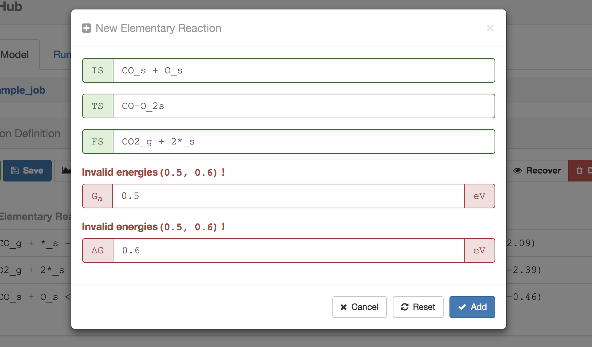
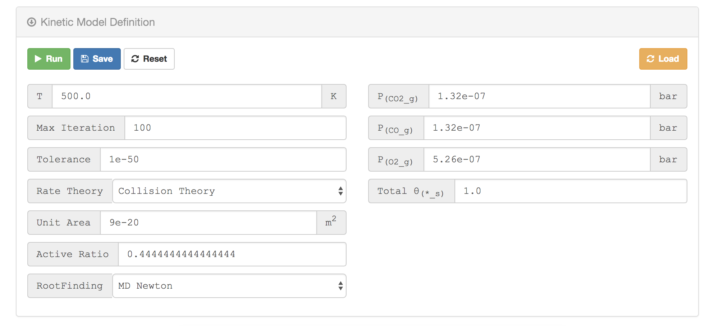

Build a model in MiKiAC-Hub¶
In this section, we introduce how to build a micro-kinetic model in MiKiAC-Hub. All information needed for model construction are input in model panel of MiKiAC-Hub. There are two main sub-panel in model panel:
- Reaction Definition panel: input reaction and energy information
- Kinetic Model Definition panel: input model conditions and parameters such as temperature, algorithm type and so on.
Reaction Definition panel¶
You can add, edit, hide and delete elementary reaction and energy information in Reaction Definition panel

Add new elementary reaction¶
Click the + New button on upper left, a reaction definition modal would pop up for inputing elementary reaction information.

MiKiAC-Hub also can check the correctness of the input reaction expression and energy values.
Energy barrier is less than reaction energy:

Input invalid reaction expression:

Edit an existing reaction¶
If you want to edit an existing reaction, just select its select box at the beginning of the reaction information line and click the Edit button, a similar modal with reaction addition will appears.

Visualize energy profile¶
Besides operating elementary reactions, you can also visualize the energy profile for selected reactions:

Kinetic Definition panel¶
Kinetic Definition panel is used to input model related parameters such as temperatures, partial pressures for gases, total coverage and solving iteration related parameters
